Designer & Developer
Creating thoughtful digital experiences and products that connect with people.
Art Gallery
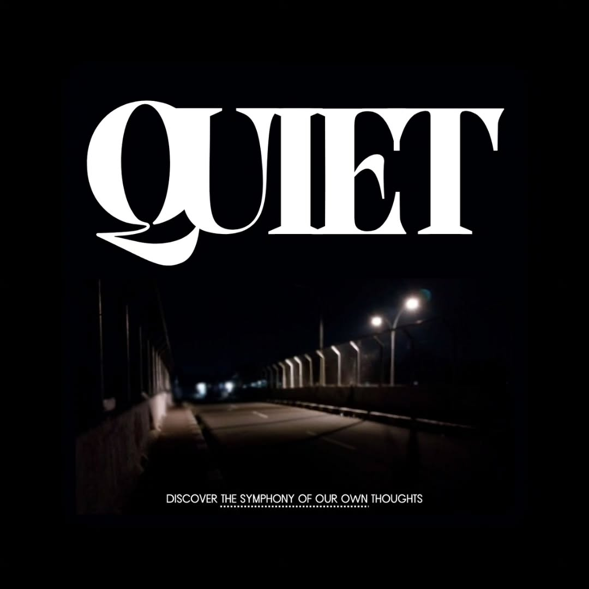
Poster Design
The Solitary Path to Resonance
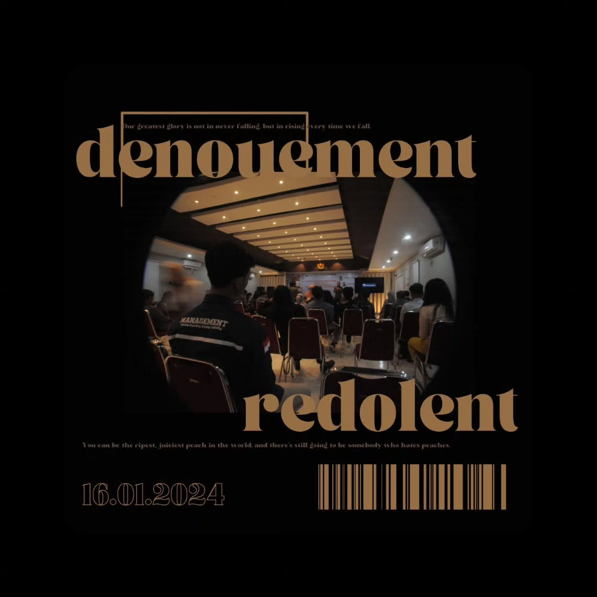
Typography Artwork
Resilience in the Symphony of Subjectivity
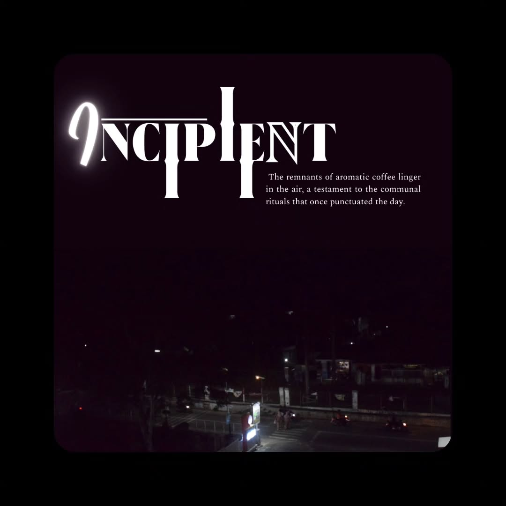
Typography Artwork
The Threshold of Memory and Possibility
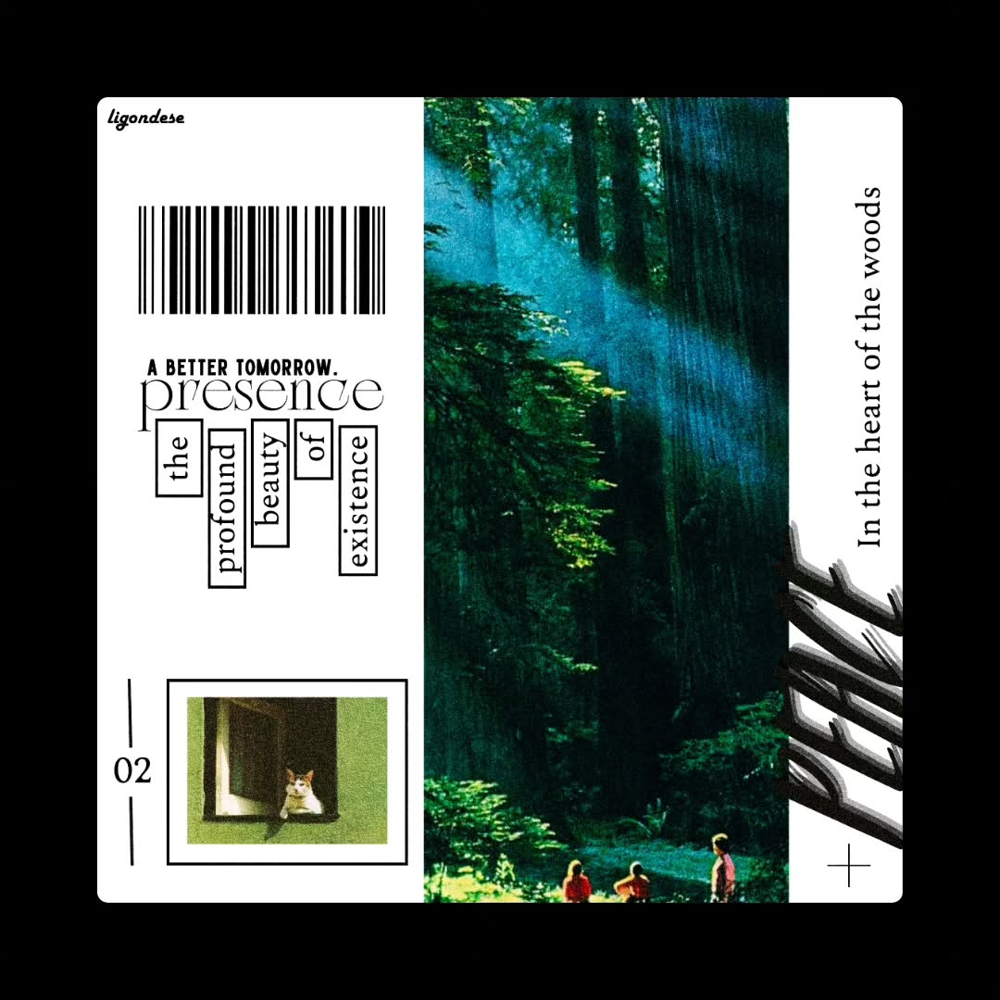
Poster Design
Harmony in the Heart of the Woods
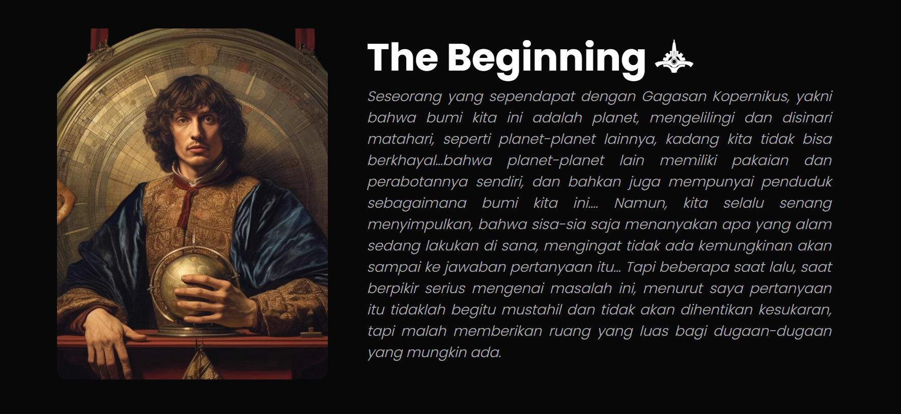
College Assignment
Edge of Infinity
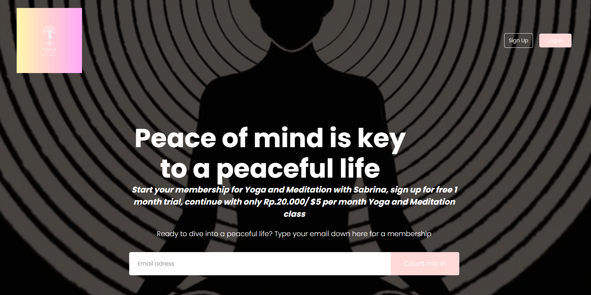
College Assignment
Sabrina's Yoga
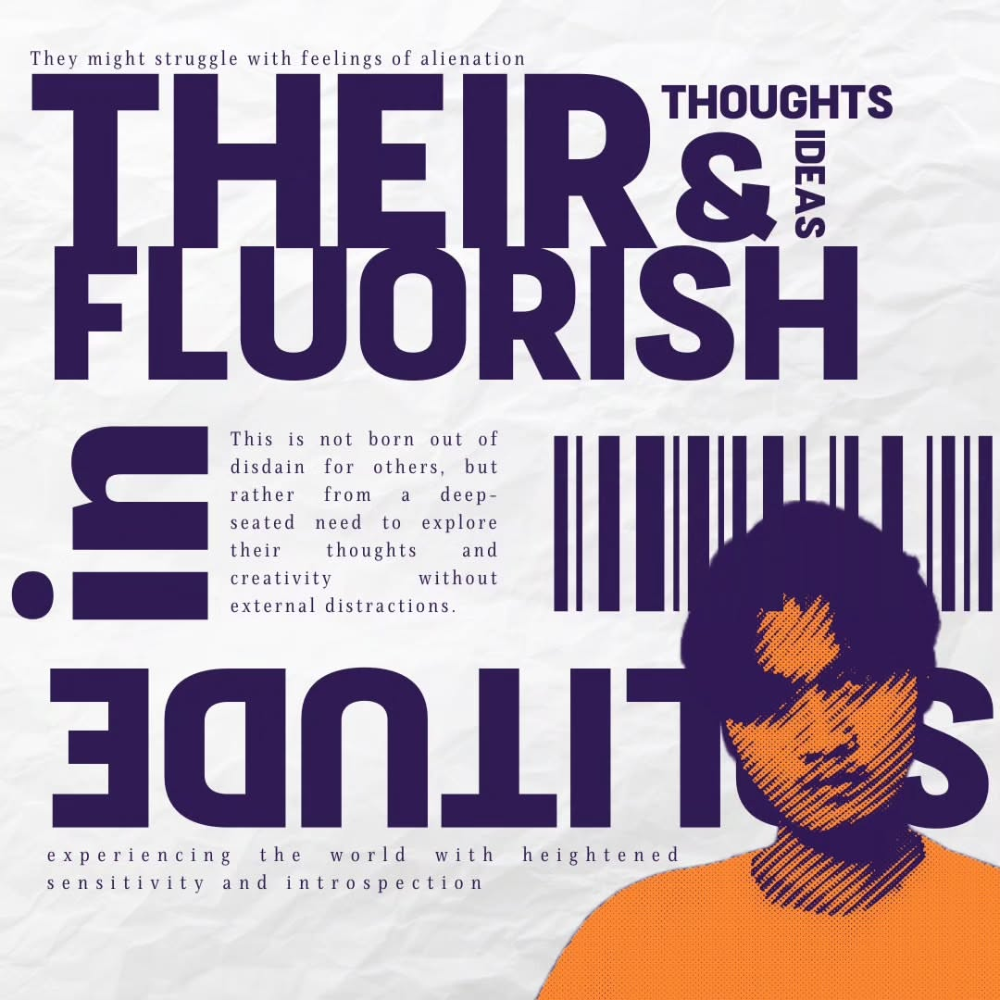
Typography Artwork
A Canvas of Flourishing Thoughts
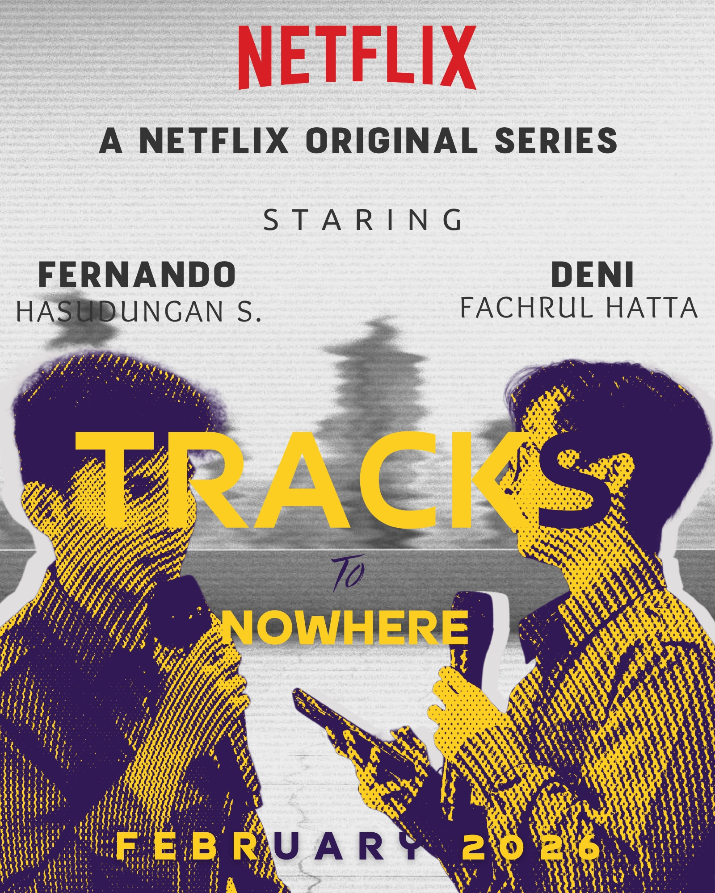
Poster Design
Echoes on Infinite Tracks
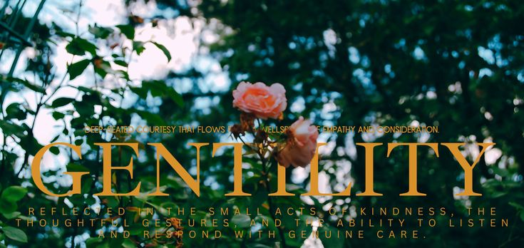
Typography Artwork
The Wellspring of Gentility
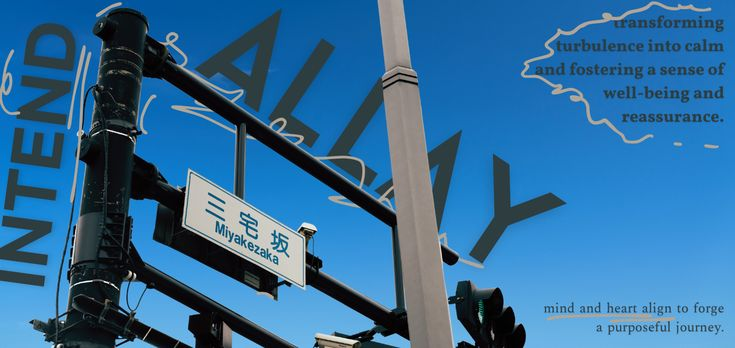
Typography Artwork
Urban Compass
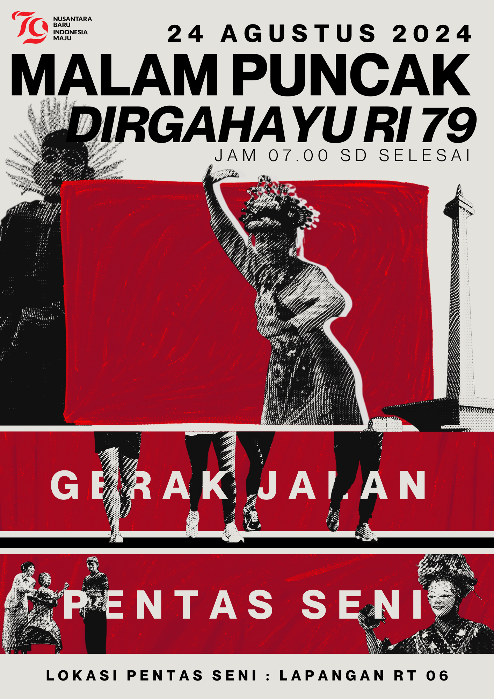
Poster Design
Independence Day Celebration

Art Competition
Burger Bangor Art Competition
About Me
I'm a designer and beginner developer passionate about creating meaningful digital experiences. With a background in Management, I focus on crafting intuitive, accessible, and visually appealing products.
My approach combines strategic thinking with technical expertise to solve complex problems and deliver exceptional results.
Design
- UX/UI Design
- Interaction Design
- Visual Design
- Prototyping
Development
- HTML/CSS
- JavaScript
- React
- Responsive Design